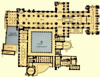
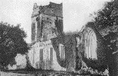
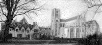
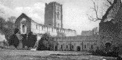

|
| A B C D E F G H I J K L M N O P Q R S T U V W X Y Z |
A monastery canonically erected and autonomous, with a community of not fewer than twelve religious; monks under the government of an abbot; nuns under that of an abbess.
 An autonomous priory is ruled by a superior who bears the title of prior instead of that of abbot; but this distinction was unknown in the first centuries of monastic history. Such were the twelve great cathedral priories of England, immediately governed by a prior, the diocesan being considered the abbot. Other priories were founded as cells, or offshoots from the great abbeys, and remained dependent on the parent house, by whose abbot the prior was appointed, and was removable at will. Originally the term monastery designated, both in the East and in the West, the dwelling either of a solitary or of a community; while caenobium, congregatio, fraternitas, asceterion, etc. were applied solely to the houses of communities. Monasteries took their names from either their locality, their founders, or from some monk whose life has shed lustre upon them; and later, from some saint whose relics were there preserved, or who was locally an object of special veneration. The monks of Egypt and Palestine, as may be gathered from the "Peregrinatio Etheriae," also selected for their monasteries sites famous for their connection with some biblical event or personage. The first monks generally settled in solitary places, away from the haunts of men, though sometimes they were to be found also in cities like Alexandria, Rome, Carthage, and Hippo. Monasteries, founded in country places, not infrequently gathered around them settlements which, particularly in England and Germany, in the course of time developed into great centres of population and industry. Many important towns owe their origin to this cause; but the tendency never showed itself in Africa and the East. Though the sites selected were often beautiful, many settlements, especially in Egypt, were of set purpose made amid arid deserts. Nor was this form of austerity confined to them. In the Middle Ages, the more dismal and savage did this site appear to be, the more did it appeal to the rigid mood of the Cistercians. Still, the preference, at least with the majority of the monks of the West, was for fertile lands, suitable for cultivation and agriculture.
 The formation of communities dates from pre-Christian times, as witness the Essenes; but the earliest Christian monastic foundations of which we have definite knowledge were simply groups of huts without any orderly arrangement, erected about the abode of some solitary famous for holiness and asceticism, around whom had gathered a knot of disciples anxious to learn his doctrine and to imitate his way of life. Communities that had outgrown the accommodation afforded by their monasteries founded branch houses, and thus propagated themselves like the swarming of a beehive. Bishops founded many monasteries, while others owed their existence to the piety of princes and nobles, who also generously endowed them. The Council of Chalcedon (451) forbade the foundation of any monastery without the permission of the local bishop, thus obviating the difficulties likely to arise from irresponsible action. This became the universal law, and it also safeguarded these institutions against disbandment or ruin, since they enjoyed a certain sacredness of character in popular estimation. Double monasteries were those in which dwelt communities both of men and women at one and the same time, under the government of a common superior, either an abbot or an abbess. The Emperor Justinian suppressed them in the East on account of the abuses which this arrangement might lead to; but the custom long prevailed in England, France, and Spain, where strict rules, keeping the sexes entirely separate at all times, minimized the danger of scandals. Examples of these were the houses of the Order of St. Gilbert of Sempringham; and in France, Faremoutiers, Chelles, Remiremont, etc.
 In the beginning, solitaries attached no importance whatever to the form of design of their dwellings. They made use of anything that Nature afforded, or their circumstances suggested. In the East, especially in Egypt, abandoned tombs and burial caves; in the West, cave and rude huts constructed of branches of trees, mud, or sun-dried bricks, and furnished with the barest necessities, sheltered many an early solitary. When the number of such solitaries in a certain locality grew, and huts increased in proportion, gradually they came to subject themselves to a common superior and to follow a common rule of life; but they had no common buildings except a church to which they all repaired for the Sunday services. At Tabennae on the Nile, in Upper Egypt, however, St. Pachomius laid the foundations of the coenobitical life, arranging everything in an organized manner. He built several monasteries, each containing about 1,600 separate cells laid out in lines as an encampment, where the monks slept and performed some of their manual tasks; but there were large halls for their common needs, as the church, refectory, kitchen, even an infirmary and a guest-house. An enclosure protecting all these buildings gave the settlement the appearance of a walled village; but every part was of the utmost simplicity, without any pretense to architectural style. It was this arrangement of monasteries, inaugurated by St. Pachomius, which finally spread throughout Palestine, and received the name of laurae, that is "lanes" or "alleys." In addition to these congregations of solitaries, all living in huts apart, there were caenobia, monasteries wherein the inmates lived a common life, none of them being permitted to retire to the cells of a laurae before they had therein undergone a lengthy period of training. In time this form of common life superseded that of the older laurae.
Monasticism in the West owes its development to St. Benedict (480-543). His Rule spread rapidly, and the number of monasteries founded in England, France, Spain, and Italy between 520 and 700 was very great. More than 15,000 Abbeys, following the Benedictine Rule, had been established before the Council of Constance in 1415. No special plan was adopted or followed in the building of the first caenobia, or monasteries as we understand the term today. The monks simply copied the buildings familiar to them, the Roman house or villa, whose plan, throughout the extent of the Roman Empire, was practically uniform. The founders of monasteries had often merely to install a community in an already existing villa. When they had to build, the natural instinct was to copy old models. If they fixed upon a site with existing buildings in good repair, they simply adapted them to their requirements, as St. Benedict did at Monte Cassino, not disdaining to turn to Christian uses what had before served for the worship of idols. The spread of the monastic life gradually effected great changes in the model of the Roman villa. The various avocations followed by the monks required suitable buildings, which were at first erected not upon any premeditated plan, but just as the need for them arose. These requirements, however, being practically the same in every country, resulted in practically similar arrangements everywhere.
 The monastic lawgivers of the East have left no written record of the principal parts of their monasteries. St. Benedict, however, mentions the chief component parts with great exactness, in his Rule, as the oratory, dormitory, refectory, kitchen, workshops, cellars for stores, infirmary, novitiate, guest-house, and by inference, the conference-room or chapter-house. These, therefore, find a place in all Benedictine abbeys, which all followed one common plan, occasionally modified to suit local conditions. The chief buildings were arranged around a quadrangle. Taking the normal English arrangement, it will be found that the church was situated as a rule on the north side, its high and massive walls affording the monks a good shelter from the rough north winds. The buildings of the choir, presbytery, and retrochapels extending more to the east, gave some protection from the biting east wind. Canterbury and Chester, however, were exceptions, their churches being on the southern side, where also they were frequently found in warm and sunny climates, with the obvious purpose of obtaining some shelter from the heat of the sun. The choir was ordinarily entered, in the normally planned English monasteries, by a door at the junction of the northern and eastern cloisters, another door at the western end of the north cloister being reserved for the more solemn processions. Although in the course of time there came into existence private rooms (chequer or saccarium) wherein the officials transacted their business, and later still private cells are to be met with, the cloisters were, in the main, the dwelling-place of the entire community, and here the common life was lived. The northern cloister, looking south, was the warmest of the four divisions. Here was the prior's seat, next to the door of the church; then those of the rest, more or less in order. The abbot's place was at the northeastern corner. The novice-master with his novices occupied the southern portion of the eastern cloister, while the junior monks were opposite in the western limb. The cold, sunless, southern walk was not used; but out of it opened the refectory, with the lavatory close at hand. In Cistercian houses it stood at right angles to the cloister. Near the refectory was the conventual kitchen with its various offices. The chapter-house opened out of the eastern cloister, as near the church as possible. The position of the dormitory was not so fixed. Normally, it communicated with the southern transept, hence it was over the eastern cloister; occasionally it stood at right angles to it, as at Winchester, or on the western side, as at Worcester. The infirmary usually appears to have been to the east of the dormitory, but no fixed position was assigned to it. The guest-house was situated where it would be least likely to interfere the privacy of the monastery. In later days, when books had multiplied, a special building for the library was added, at right angles to one of the walks of the cloister. To these may be added the calefactory, the parlour, or locutorium, the almonry, and the offices of the obedientiaries; but these additional buildings fitted into the general plan where they best might, and their disposition differed somewhat in the various monasteries. The English Cistercian houses, of which there are so many extensive and beautiful remains, were mainly arranged after the plan of Cîteaux, in Burgundy, the mother-house, with slight local variations.
The Carthusian monastery differed considerably in its arrangements from those of other orders. The monks were practically hermits, and each occupied a small detached cottage, containing three rooms, which they left only to attend the services of the church and on certain days when the community met together in the refectory. These cottages opened out of three sides of a quadrangular cloister, and on the fourth side were the church, refectory, chapter-house, and other public offices. Both laurae and caenobium were surrounded by walls which protected the inmates either from the intrusion of seculars or from the violence of marauders. No monk might go beyond this enclosure without permission. The monks of the earlier period considered this separation from the outer world as a matter of prime importance. Women were never permitted to enter the precincts of monasteries for men; even access to the church was oftentimes denied them, or, if accorded admission, as at Durham, they were relegated to a strictly limited space, farthest removed from the monks' choir. Even greater strictness was observed in safe-guarding the enclosure of nuns. The danger of attack from Saracen hordes necessitated, in the case of Eastern monasteries, the erection of lofty walls, with only one entrance place many feet above the ground, reached by a stairway or drawbridge that could be raised for defense. The monks of the West, not standing in fear of such incursions, did not need such elaborate safeguards, and therefore contented themselves with ordinary enclosure walls. A religious of mature age and character was selected for the responsible office of porter, and to act as the channel of communication between the inmates and the outside world. His chamber was always close by, so that he might be at hand to fulfill his duties of receiving the poor and of announcing the arrival of guests. In the Egyptian monasteries the guest-house, situated near the entrance gateway, was place under the charge of the porter, who was assisted by the novices. St. Benedict so arranged that it should be a building distinct from the monastery itself, although within the enclosure. It had its own kitchen, served by two of the brethren appointed for that purpose annually; a refectory where the abbot took his meals with distinguished guests, and, when he thought fit, invited some of the seniors to join him there; an apartment for the solemn reception of guests, in which the ceremony of washing their feet, as prescribed by the Rule, was performed by the abbot and his community; and a dormitory suitably furnished. Thus the guests received every attention due to them by the laws of charity and hospitality, and the community, while gaining the merit of dispensing them in a large-hearted way, through the appointed officials, suffered no disturbance of their own peace and quiet. It was usual for the buildings dedicated for hospitality to be divided into four: one for the reception of guests of distinction, another for poor travelers and pilgrims, a third for merchants arriving on business with the cellarer, and the last for monk-visitors.
Formerly, as now, monastic communities always and everywhere extended a generous hospitality to all comers as an important way of fulfilling their social duties; hence monasteries lying on or near the main highways enjoyed particular consideration and esteem. Where guests were frequent and numerous, the accommodation provided for them was on a commensurate scale. And as it was necessary for great personages to travel accompanied by a crowd of retainers, vast stables and other outhouses were added to these monastic hostels. Later xenodochia, or infirmaries, were attached to these guest-houses, where sick travelers could receive medical treatment. St. Benedict ordained that the monastic oratory should be what its name implied, a place exclusively reserved for public and private prayer. In the beginning it was a mere chapel, only large enough to hold the religious, since externs were not admitted. The size of these oratories were gradually enlarged to meet the requirements of the liturgy. There was also usually an oratory, outside the monastic enclosure, to which women were admitted.
The refectory was the common hall where the monks assembled for their meals. Strict silence was observed there, but during the meals one of the brethren read aloud to the community. The refectory was originally built on the plan of the ancient Roman triclinium, terminating in an apse. The tables were ranged along three sides of the room near the walls, leaving the interior space for the movements of the servers. Near the door of the refectory was invariably to be found the lavatory, where the monks washed their hands before and after meals. The kitchen, was, for convenience, always situated near the refectory. In the larger monasteries separate kitchens were provided for the community (where the brethren performed the duties in weekly turns), the abbot, the sick, and the guests. The dormitory was the community bed-chamber. A lamp burned in it throughout the night. The monks slept clothed, so as to be ready, as St. Benedict says, to rise without delay for the night Office. The normal arrangement, where the numbers permitted it, was for all to sleep in one dormitory, hence there were often very large; sometimes more than one was required. The practice, however, gradually came in of dividing the large dormitory into numerous small cubicles, one being allotted to each monk. The latrines were separated from the main buildings by a passage, and were always planned with the greatest regard to health and cleanliness, a copious supply of running water being used wherever possible.
Although St. Benedict makes no specific mention of a chapter-house, nevertheless he does order monks to "come together presently after supper to read the 'Collations.'" No chapter-house appears on the plan of the great Swiss monastery of St. Gall, dating back to the ninth century; in the early days, therefore, the cloisters must have served for the meetings of the community, either for instruction or to discuss the affairs of the monastery. But convenience soon suggested a special place for these purposes, and there is mention of chapter-rooms in the Council of Aix-la-Chapelle (817). The chapter-room was always on the cloister level, on to which it opened. The cloisters, though covered, were generally open to the weather, and were an adaptation of the old Roman atrium. Besides providing a means of communication between the various parts of the monastery, they were both the dwelling-place and the workshop of the monks, and thus the word cloister became a synonym for the monastic life. How the monks managed to live in these open galleries during the winter months, in cold climates, is a mystery; a room, called a "calefactory," heated by flues, or in which a fire was kept up, where the monks might retire occasionally to warm themselves, was provided in English monasteries.
On the Continent the practice in regard to the novices differed somewhat from that prevailing in England. Not being as yet incorporated into the community, they were not permitted to dwell in the interior of the monastery. They had their places in choir during the Divine Office, but they spent the rest of their time in the novitiate. A senior monk, called the novice-master, instructed them in the principles of the religious life, and "tried their spirits if they be of God," as St. Benedict's Rule prescribed. This period of probation lasted a whole year. Abroad, the building set apart for the novices was provided with its own dormitory, kitchen, refectory, workroom, and occasionally even its own cloisters; it was, in fact, a miniature monastery within a larger one.
The infirmary was a special building set apart for the accommodation of the sick and infirm brethren, who there received the particular care and attention they needed, at the hands of those appointed to the duty. A herbal garden provided many of the remedies. When death had brought its reward, the monks were laid to rest in a cemetery within the monastic precincts. The honour of burial amongst the religious, a privilege highly esteemed, was also sometimes accorded bishops, royal personages, and distinguished benefactors.
No monastery was complete without its cellars for the storing of provisions. There were, in addition, the granaries, barns, etc., all under the care of the cellarer, as also such buildings and outhouses as were used for agricultural purposes. Gardens and orchards provided such vegetables and fruit as were cultivated in the Middle Ages. The work of the fields did not, however, occupy all the time of the monks. Besides cultivating the arts, and transcribing manuscripts, they plied many trades, such as tailoring, shoe-making, carpentering, etc., while others baked the bread for daily consumption. Most monasteries had a mill for grinding their own corn. It will thus be seen that an Abbey, especially if it maintained a large community, was a little city, self-contained and self-sufficing, as St. Benedict wished it to be, to obviate as far as possible any necessity for the monks to leave the enclosure. The enormous development of the monastic life brought in its train a similar development in the accommodation suitable for it. The monastic buildings, at first so primitive, grew in time till they presented a very imposing appearance; and the arts were requisitioned and ancient models of architecture copied, adapted, and modified. The Basilican plan, indigenous to Italy, was, naturally, that first adopted. Its churches consisted of a nave and aisles, lighted by clerestory windows, and terminating in a semicircular sanctuary or apse. As time went on, the round arch, typical of Basilican and Romanesque architecture, gradually gave place to the pointed arch, peculiar to the new Gothic style, which is defined as "perfected Romanesque." In England a tendency developed of making the sanctuary rectangular instead of apsidal. The Normans adopted this arrangement; and in their church-planning the English oblong type of chancel gradually took the place of the Romanesque and continental apse, and the Basilica plan was abandoned for that of the Gothic, of a crossing or transept, separating nave from chancel, the latter being extended to make room for the choir. The final evolution of the style peculiar to England is due to the Cistercians, the characteristic of whose Abbeys was extreme simplicity and the absence of needless ornament; their renunciation of the world was evidenced in all that met the eye. Pinnacles, turrets, traceried windows, and stained glass were, in their early days at least, proscribed. And during the twelfth century Cistercian influence predominated throughout Western Europe. The Cistercian churches of this period, Fountains, Kirkstall, Jervaulx, Netly, and Tintern, have rectangular chancels. These and other twelfth century churches belong to what is known as the Transitional or Pointed Norman style. Then followed the greater elaboration of Early and Decorated English, as seen at Norwich and Worcester, or rebuilt Westminster, culminating in the splendours of the Perpendicular, or Tudor style, of which Henry VII's Chapel, at Westminster, is so superb an example. Few English Abbeys of note, however, were of homogeneous architecture; in fact, the mixture of styles, though sometimes almost bewildering, adds to what is left of these stately piles a greater picturesqueness ever pleasing to archaeologist and artist.
The routine of a monastery could be maintained and supervised only by the delegation of some of the abbot's authority to various officials, who thus shared with him the burden of rule and administration, and the transaction of business--considerable and ever increasing in volume, where a large and important monastery was concerned. The rule was exercised in subordination to the abbot by the claustral prior and sub-prior; the administration, by officials termed obedientiaries who possessed extensive powers in their own spheres. Their number varied in different houses; but the following were the ordinary officials, together with their duties, most commonly named in old Customals: The cantor, or precentor, regulated the singing in the church service, and was assisted by the succentor or sub-cantor. He trained the novices to render the traditional chant properly. In some places he acted as master to the boys of the claustral school. He was the librarian and archivist, and in this capacity, had charge of the precious tomes and manuscripts preserved in a special aumbry or book-cupboard, and had to provide the choirbooks and those for reading in the refectory. He prepared and sent round the briefs, or mortuary-rolls, announcing the death of any of the brethren to other monasteries. He was also one of the three official custodians of the convent seal, holding one of the keys to the chest where it was kept. To the sacristan and his assistants was committed the care of the church fabric, together with its sacred plate and vestments. He had to see to the cleaning and lighting of the church, its decking for great festivals, and the vestments used by the sacred vestments. The cemetery was also under his charge. To his office pertained the lighting of the entire of the entire monastery: and thus he superintended the candle-making, and bought the necessary stores of wax, tallow, and cotton for wicks. He slept in the church, and took his meals near at hand, so that day and night the church was never left without a guardian. His chief assistants were a revestiarius, who saw to the vestments, the linen, and the hangings of the church, and was responsible for their being kept in repair, or replaced when worn out; and the treasurer, who was in special charge of the shrines, reliquaries, sacred vessels, and other plate.
The cellarer was the purveyor of all food-stuffs and drink for the use of the community. This entailed frequent absences, and hence exemption from much of the ordinary choir duties. He had charge of the hired servants, whom he alone could engage, dismiss, or punish. He superintended the serving up of the meals. To his office belonged the supplying of fuel, carriage of goods, repairs of the house, etc. He was aided by a sub-cellarer and, in the bakery, by a granatorius, or keeper of the grain, who saw to the grinding and quality of flour. The refectorian had charge of the refectory, or "fratry," keeping it clean, supplied with cloths, napkins, jugs, and dishes, and superintended the laying of the tables. To him, too, was assigned the care of the lavatory, and the providing it with towels and, if necessary, hot water. The office of the kitchener was one of great responsibility, for to him fell the portioning out of the food, and it was only great experience which could preserve the happy mean between waste and niggardliness. He had under him an emptor, or buyer, experienced in marketing. He had to keep a strict account of his expenditures and of the stores, presenting in books weekly to the abbot for examination. He presided over the entire kitchen department, seeing particularly that all the utensils were kept scrupulously clean. The discharge of his duty entailed frequent exemption from choir. The weekly servers helped in the kitchen, under the kitchener's orders, and waited at table during the meals. The concluded their week's work on Saturday evenings by washing the feet of the brethren. The infirmarian had to tend the sick with affectionate sympathy, and, as far as might be necessary, was excused from regular duties. If a priest, he said Mass for the sick; if not, he got a priest to do so. He always slept in the infirmary, even when there were no sick there, so as to be found on the spot in case of emergency. The curious practice of blood-letting, looked on as so salutary in ancient times, was carried out by the infirmarian. The chief duty of the almoner was to distribute the alms of the monastery, in food and clothing, to the poor, with kindness and discretion; and; while ministering to their bodily wants, he was not to forget those of their soul also. He superintended the daily maundy or washing of the feet of the poor selected for that purpose. Another of his duties was to take charge of any school, other than the claustral school, connected with the monastery. To him also fell the task of seeing to the circulation of the mortuary-rolls.
In medieval days the hospitality extended to travelers by the monasteries was of such constant occurrences that the guest-master required a full measure of tact, prudence, and discretion, as well as affability, since the reputation of the house was in his keeping. His first duty was to see that the guest-house always ready for the reception of visitors, whom he was to receive, as enjoined by the Rule, as he would Christ Himself, and during their stay to supply their wants, entertain them, conduct them to the church services, and generally to hold himself at their disposal. The chief duties of the chamberlain of a monastery were concerned with the wardrobe of the brethren, repairing or renewing their worn-out garments, and preserving cast-off clothes for distribution to the poor by the almoner. He had also to superintend the laundry. As it belonged to him to provide cloth and other material for the clothing, he had to attend the neighbouring fairs to purchase his stock. On him, too, devolved the task of making preparation for the baths, feet-washing, and shaving of the brethren.
The novice-master was of course one of the most important officials in every monastery. In church, in the refectory, in the cloister, in the dormitory, he kept a watchful control over the novices, and spent the day teaching them and exercising them in the rules and traditional practices of the religious life, encouraging and helping those who showed real signs of a monastic vocation. The weekly officials included, besides the servers already referred to, the reader in the refectory, who was enjoined to make careful preparation so as to avoid mistakes. Also, the antiphoner whose duty it was to read the invitatory at Matins, intone the first antiphon of the Psalms, the versicles and responsories, after the lessons, and the capitulum, or little chapter, etc. The hebdomadarian, or priest of the week, had to commence all the various canonical Hours, give all the blessings that might be required, and sing the High Mass each day.
The greater Abbeys in England were represented through their superiors in Parliament, in Convocations, and in Synod. Their superiors were regularly included in the Commissions of Peace, and in all things acted as, and were considered the equals of, their great feudal neighbours. The alms bestowed on the poor by the monasteries, together with those furnished by law, by the parish priests, served to support them without recourse to the more recent poor-laws. The lot of the poor was lightened, and they knew that they could turn for help and sympathy to the religious houses. Poverty as witnessed in these days was impossible in all the Middle Ages, because the monks, spread over all the country, acted as merely stewards of God's property, and dispensed it, if lavishly, yet with discretion. The relations between the monks and their tenants were uniformly kindly; the smaller cottagers were treated with much consideration, and if it became necessary to inflict fines, justice was tempered with mercy. The monastic manors were worked somewhat on the principle of a co-operative farm. If we may form a judgment on the whole of England from the "Durham Halmote Rolls," the conditions of village life left little to be desired. Provisions for watching over the public health were enforced, a guard kept over water supplies, stringent measures taken in regard to springs and wells, and the cleansing of ponds and milldams. A common mill ground the tenants' corn, and their bread was baked in a common oven. The relation of the monks to their peasant-tenants was rather that of rent-chargers than of absolute owners.
APA citation. (1907). Abbey. In The Catholic Encyclopedia. New York: Robert Appleton Company. Retrieved April 26, 2010 from New Advent: http://www.newadvent.org/cathen/01010a.htm
MLA citation. "Abbey." The Catholic Encyclopedia. Vol. 1. New York: Robert Appleton Company, 1907. 26 Apr. 2010 <http://www.newadvent.org/cathen/01010a.htm>.
Transcription. This article was transcribed for New Advent by Rev. Louis Hacker, O.S.B.
Ecclesiastical approbation. Nihil Obstat. March 1, 1907. Remy Lafort, S.T.D., Censor. Imprimatur. +John Cardinal Farley, Archbishop of New York.
Contact information. The editor of New Advent is Kevin Knight. My email address is webmaster at newadvent.org. (To help fight spam, this address might change occasionally.) Regrettably, I can't reply to every letter, but I greatly appreciate your feedback — especially notifications about typographical errors and inappropriate ads.
{kind=link}
{kind=link}
{kind=link}
{kind=link}